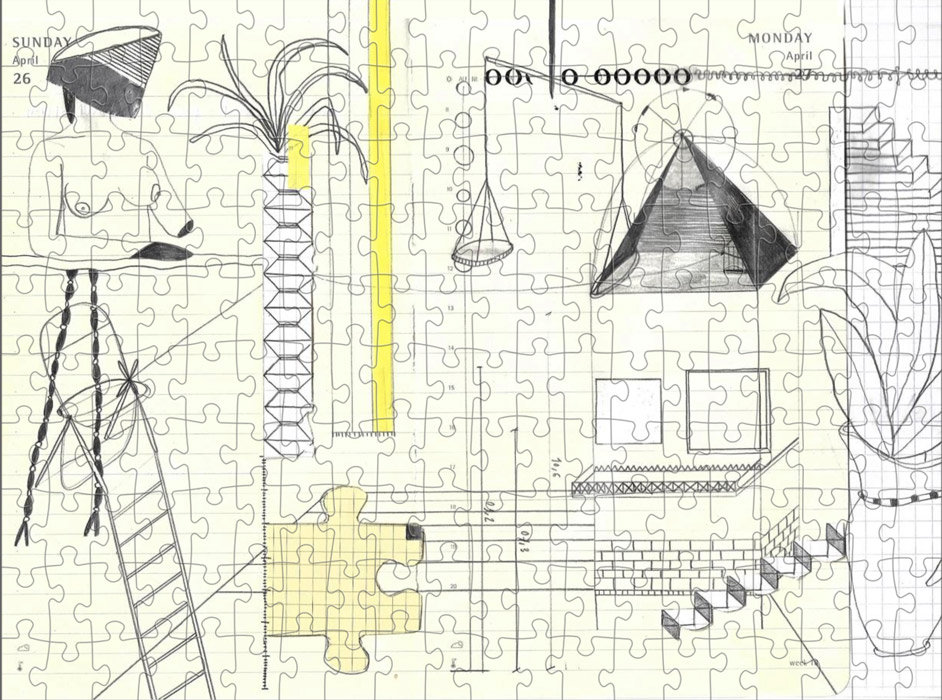

ENSEMBLE: drawing analyse
209 x 405 mm
silkscreenprint
edition of 25 prints
€50/print


ENSEMBLE: An Architecture of the Inbetween
2020, Art Paper Editions
Limited edition / (200 ed.)
book + small (36x58cm) silkscreen-print: €45
(27 ed.)
book + big (60,2x84cm) silkscreen-print: €70
24 x 33 cm, 136 p., ills b&w, paperback, English / Farsi
December 2020
Editing and design: 6’56”

Quarantaine Days (Puzzle 1)
edition of 10 puzzles
360 x 480 mm
puzzle pieces: 200
€45,99 x 2/puzzle (incl. certification paper)

Quarantaine Days (Puzzle 2)
edition of 10 puzzles
360 x 480 mm
puzzle pieces: 200
€45,99 x 2/puzzle (incl. certification paper)